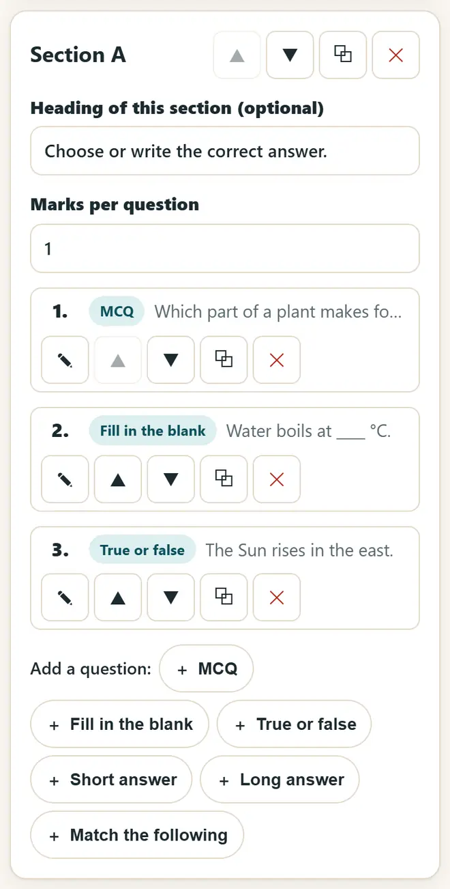

ஆசிரியர்களுக்கான வினாத்தாள் வடிவம்: ஆன்லைனில் இலவசமாக வினாத்தாள் உருவாக்குங்கள்
வேர்ட் செயலியில் தேர்வுத்தாளைத் தட்டச்சு செய்ய நேரம் ஆகும்: எண்ணிடுதல், ஓரத்தில் மதிப்பெண் எழுதுதல், விடைத்தேர்வுகளை நேராக வரிசைப்படுத்துதல். இந்த இலவசச் செயலி வடிவத்தைத் தானே கவனித்துக்கொள்கிறது. நீங்கள் எந்த மொழியிலும் வினாக்களை எழுதலாம்; அது அவற்றுக்கு எண்ணிட்டு, மதிப்பெண்களைக் கூட்டி, விடைக்குறிப்பையும் உருவாக்கும்.
சுருக்கமான பதில்
வினாத்தாள் மேக்கர் திறந்து “வெற்று வினாத்தாளைத் தொடங்கு” அழுத்துங்கள். பள்ளி, தேர்வு, வகுப்பு, பாடம், நேரம், மொத்த மதிப்பெண்கள் ஆகியவற்றை நிரப்புங்கள். பிரிவுகளைச் சேர்த்து, ஒவ்வொன்றிலும் “ஒரு வினாவுக்கு மதிப்பெண்” நிரப்பி, வினாக்களைச் சேருங்கள். “மொத்த மதிப்பெண்கள்” மொத்த மதிப்பெண்களுடன் பொருந்தியதும் “அச்சிடு அல்லது PDF ஆகச் சேமி” அழுத்துங்கள்.
5 படிகளில் வினாத்தாள்
-
தாளின் தலைப்பை நிரப்புங்கள்
வினாத்தாள் மேக்கர் திறங்கள். வடிவத்தைப் பார்க்க வசதியாக அது ஒரு மாதிரி வினாத்தாளுடன் திறக்கும். அதை நீக்க “வெற்று வினாத்தாளைத் தொடங்கு” அழுத்துங்கள். பள்ளியின் பெயர், தேர்வின் பெயர், வகுப்பு, பாடம், நேரம், மொத்த மதிப்பெண்கள், தேதி ஆகியவற்றை எழுதுங்கள். மாணவரின் பெயருக்கும் வரிசை எண்ணுக்கும் கோடுகளையும் சேர்க்கலாம்.
-
பொது அறிவுரைகளை எழுதுங்கள்
ஒவ்வொரு வரியிலும் ஓர் அறிவுரையை எழுதுங்கள்; எடுத்துக்காட்டாக, “அனைத்து வினாக்களுக்கும் விடையளிக்க வேண்டும்”. தாளில் அறிவுரைகள் வேண்டாம் என்றால் அந்தப் பெட்டியின் குறியை நீக்குங்கள்.
-
பிரிவுகளைச் சேர்த்து மதிப்பெண்களை அமையுங்கள்
தாளின் ஒவ்வொரு பகுதிக்கும் “பிரிவைச் சேர்” அழுத்துங்கள். விரும்பினால் பிரிவுக்கு ஒரு தலைப்பு கொடுத்து, “ஒரு வினாவுக்கு மதிப்பெண்” நிரப்புங்கள்: அந்தப் பிரிவில் உள்ள ஒவ்வொரு வினாவுக்கும் அதே மதிப்பெண்கள்.
-
வினாக்களைச் சேருங்கள்
ஒவ்வொரு பிரிவிலும் இந்தப் பொத்தான்களால் வினாக்களைச் சேருங்கள்: “MCQ”, “கோடிட்ட இடம் நிரப்புக”, “சரியா தவறா”, “குறு விடை”, “நெடு விடை”, “பொருத்துக”. சரியான விடைத்தேர்வைக் குறியிடுங்கள் அல்லது விடைக்குறிப்புக்கான விடையை எழுதுங்கள். “அல்லது” வினாவைச் சேர்க்கலாம், வினாவை மேலும் கீழும் நகர்த்தலாம், அதன் நகலையும் உருவாக்கலாம்.

பிரிவுகளையும் வினாக்களையும் சேருங்கள். மதிப்பெண்கள் தானாகக் கூட்டப்படும். -
மொத்தத்தைச் சரிபார்த்து அச்சிடுங்கள்
செயலி வினாக்களுக்கு எண்ணிட்டு, மதிப்பெண்களைக் கூட்டுகிறது. தாள் மொத்த மதிப்பெண்களுடன் பொருந்துகிறதா என்பதை “மொத்த மதிப்பெண்கள்” காட்டும். “அச்சிடு அல்லது PDF ஆகச் சேமி” அழுத்தி A4 தாள் அல்லது Save as PDF தேர்ந்தெடுங்கள். விடைகளின் உங்கள் நகலுக்கு “விடைக்குறிப்பு” திறந்து “விடைக்குறிப்பை அச்சிடு” அழுத்துங்கள்.

வினாத்தாள், A4-இல் அச்சிடத் தயார்.
நல்ல வினாத்தாளுக்கான குறிப்புகள்
- எளிதிலிருந்து கடினத்துக்குச் செல்லுங்கள்: முதலில் புறவய வினாக்கள் (MCQ, கோடிட்ட இடம், சரியா தவறா), பிறகு குறுவிடை, பிறகு நெடுவிடை.
- பொருத்துக வினாவில் ஒவ்வொரு சரியான இணையையும் ஒரே வரியில் எழுதுங்கள். தாள் இரண்டாம் நிரலைத் தானாகவே கலைத்துவிடும்; விடைக்குறிப்பில் சரியான இணைகள் இருக்கும்.
- வினாக்களை எந்த மொழியிலும் எழுதலாம். “வினாத்தாளில் அச்சாகும் சொற்களின் மொழி” மூலம் நேரம், மொத்த மதிப்பெண்கள், பிரிவு போன்ற சொற்கள் உங்கள் தாளின் மொழியில் அச்சாகும்.
- தாளைக் கோப்பாக வைத்துக்கொள்ள “வினாத்தாளைக் கோப்பாகச் சேமி” அழுத்துங்கள். அடுத்த முறை “சேமித்த வினாத்தாளைத் திற” அழுத்தி, சில வினாக்களை மாற்றி, மீண்டும் அச்சிடுங்கள். அந்தக் கோப்பை வேறோர் ஆசிரியருக்கும் அனுப்பலாம்.
புதிய இலவசக் கருவிகளும் இந்தியில் AI பாடங்களும் பெறுங்கள்
எங்கள் மின்னஞ்சல் பட்டியலில் சேருங்கள்: புதிய இலவசச் செயலிகள், புதிய வழிகாட்டிகள், AI பற்றிய இந்தி வீடியோ பாடங்கள் பற்றிய தகவல் உங்களுக்கு வரும். ஸ்பேம் இல்லை.
பெரியவர்களுக்கு (18+) மட்டும். எப்போது வேண்டுமானாலும் விலகலாம்.
இந்தக் கருவிகளை ஏன் பரிந்துரைக்கிறோம்
- அனைவருக்கும் இலவசம்: விளம்பரம் இல்லை, பதிவு இல்லை, கட்டணத் திட்டம் இல்லை.
- தனிப்பட்டது: உங்கள் கோப்புகளும் விவரங்களும் உங்கள் சொந்தச் சாதனத்திலேயே இருக்கும்.
- போன், லேப்டாப் அல்லது ஸ்மார்ட்போர்டில் இயங்கும், ஒருமுறை திறந்த பின் இணையம் இல்லாமலும்.
- தமிழ், இந்தி உட்பட 12 மொழிகளில்.
வீடியோவில் கற்க விருப்பமா? எங்கள் YouTube சேனலில் AI மற்றும் இலவசக் கருவிகள் பற்றிய இந்திப் பாடங்களைப் பாருங்கள்.
அடிக்கடி கேட்கப்படும் கேள்விகள்
வினாத்தாளின் வடிவம் எப்படி இருக்கும்?
மேலே பள்ளியின் பெயர், தேர்வின் பெயர், வகுப்பு, பாடம், நேரம், மொத்த மதிப்பெண்கள். பிறகு பொது அறிவுரைகள்; அதன் பின் பிரிவுகளாக வினாக்கள், மதிப்பெண்களுடன். உங்கள் பள்ளிக்கு அல்லது கல்வி வாரியத்துக்குத் தனி அமைப்பு இருக்கலாம்; எனவே பிரிவுகளின் எண்ணிக்கையையும் மதிப்பெண்களையும் அதன்படி வையுங்கள்.
தமிழில் அல்லது வேறு மொழியில் வினாத்தாள் உருவாக்க முடியுமா?
ஆம். உங்கள் கைப்பேசியில் அல்லது கணினியில் தட்டச்சு செய்ய முடிந்த எந்த மொழியிலும் வினாக்களை எழுதுங்கள். தாளில் உள்ள தலைப்புச் சொற்களும் அதே மொழியில் வர, “வினாத்தாளில் அச்சாகும் சொற்களின் மொழி” என்பதில் அதே மொழியைத் தேர்ந்தெடுங்கள்.
இது விடைக்குறிப்பையும் உருவாக்குமா?
ஆம். நீங்கள் குறியிடும் சரியான விடைத்தேர்வுகளிலிருந்தும் எழுதும் விடைகளிலிருந்தும் விடைக்குறிப்பு உருவாகிறது. அதைப் பார்க்க “விடைக்குறிப்பு” திறங்கள்; தனியாக அச்சிட “விடைக்குறிப்பை அச்சிடு” அழுத்துங்கள்.
வினாத்தாளை PDF அல்லது Word கோப்பாகச் சேமிக்க முடியுமா?
PDF: ஆம். “அச்சிடு அல்லது PDF ஆகச் சேமி” அழுத்தி Save as PDF தேர்ந்தெடுங்கள். செயலி Word கோப்பை உருவாக்காது. “வினாத்தாளைக் கோப்பாகச் சேமி” ஒரு கோப்பைச் சேமிக்கும்; அது இதே செயலியில் மீண்டும் திறக்கும், எனவே தாளைப் பிறகு மாற்றலாம்.
இது இலவசமா? என் வினாக்கள் சாதனத்தை விட்டு வெளியே செல்லுமா?
இது இலவசம்; பதிவு இல்லை, வாட்டர்மார்க் இல்லை. தாள் உங்கள் உலாவியிலேயே உருவாகிறது, எதுவும் பதிவேற்றப்படாது; எனவே வினாக்கள் உங்களிடமே இருக்கும்.
பயனுள்ளதாக இருந்ததா?
ஒரு நண்பருக்கோ, சக ஊழியர்களுக்கோ, உங்கள் பள்ளியின் WhatsApp குழுவுக்கோ அனுப்புங்கள்.